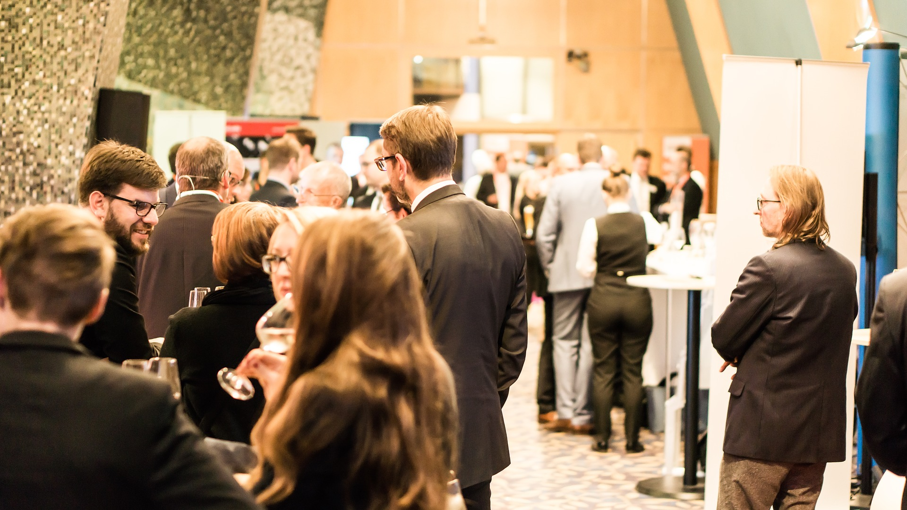
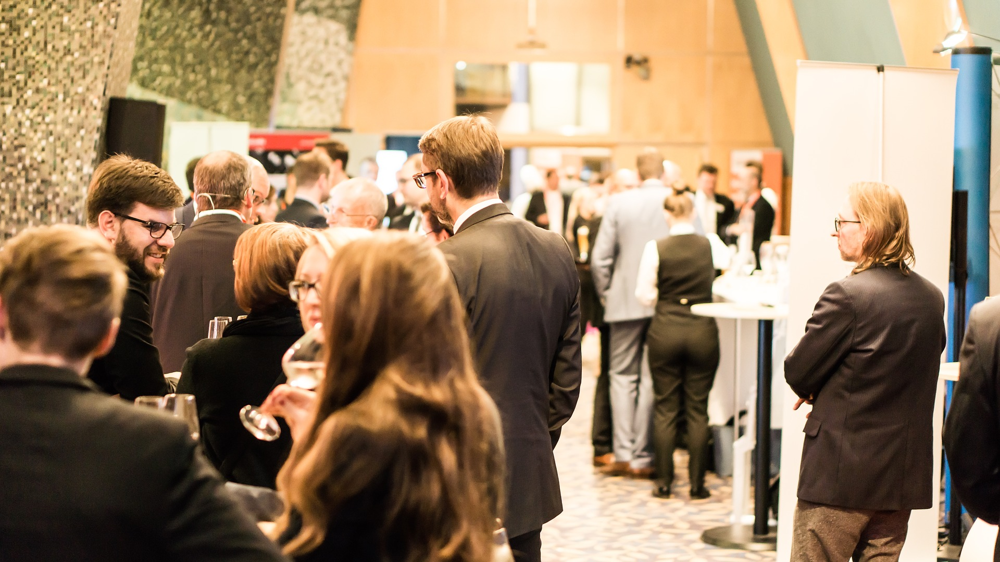

Plateforme de réservation d’activités pour tous en région Auvergne Rhône-Alpes.
J'peux pas, j'ai Apéro Boat ! 🥂
Profitez d'une balade en voilier privatisé sur le Rhône et détendez-vous tout en découvrant des produits régionaux lors d'un apéro convivial.
Prêt à lever l'ancre ? ⛵️
#bateau #apéro #boat #cocktail #vacances #paysages #onlylyon #igerslyon #lyoncity #villedelyon #rhone #regionauvergnerhônealpes #goodtimefrance
Détendez-vous grâce à un massage crânien à quelques pas de la Place Bellecour. 🧖🏼♀️
Pendant 50 minutes, profitez des bienfaits d’un massage crânien et plongez dans l’univers d’un salon thaïlandais au décor traditionnel.
Rendez-vous sur notre plateforme rubrique « Beauté Bien-Être », lien en bio ! 👈🏼
#massage #bienetre #thailand #thaimassage #sortiralyon #igerslyon #lyoncity #beauté #soinvisage

Comment est votre émouture ? Elle est tranchante ! 🗡
Accompagné d'Olivier, expert coutelier et forgeron, vous apprendrez tous les rudiments d'un couteau droit, montage plate-semelle. Les termes d'émouture et de ricasso n'auront plus aucun secret pour vous. 🤫
Durant ce stage d'une journée, vous pourrez fabriquer votre propre couteau en vous servant notamment d'une forge et d'un marteau-pilon. Vous pourrez même décider de la forme et des matériaux de votre création.
Vous pourrez ensuite repartir avec votre création, de quoi impressionner tout le monde à l'apéro !
#lyonfrancecities #onlylyontourisme #lyonfrance🇫🇷 #goodtimefrance #auvergne_rhonealpes #rhônealpesauvergnetourisme #regionaura #saintétiennemétropole #clermontferrandmaville #igersfrance🇫🇷


 
